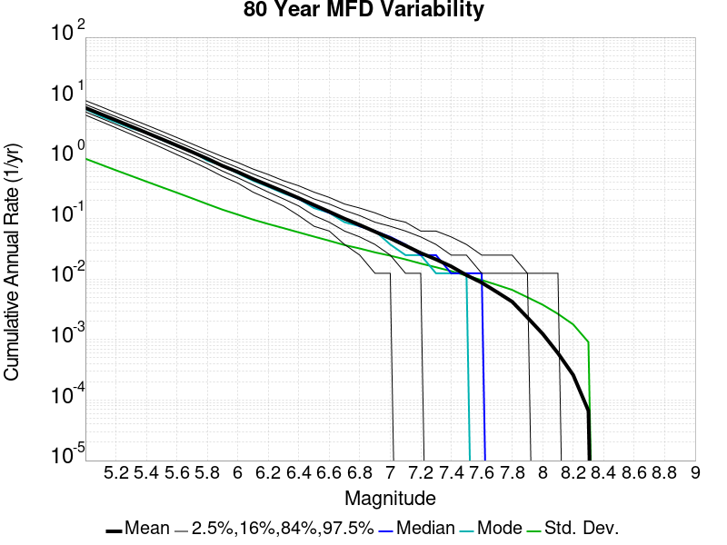
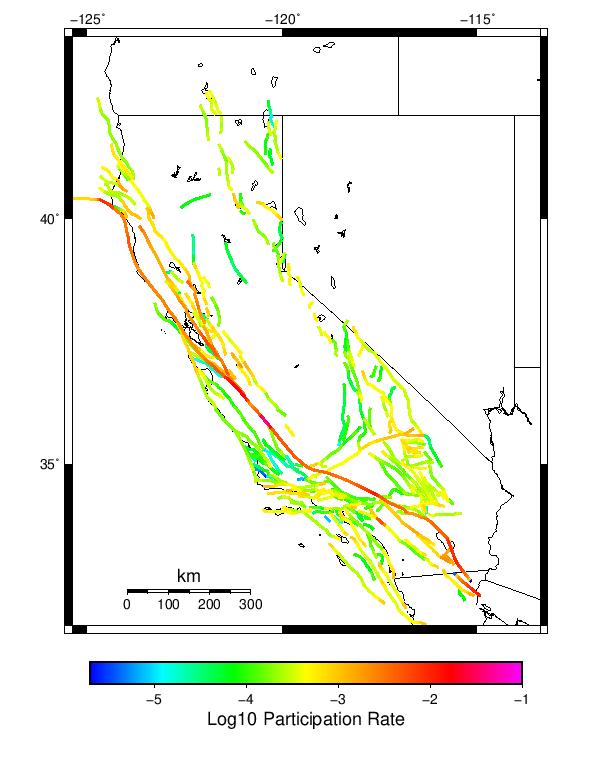
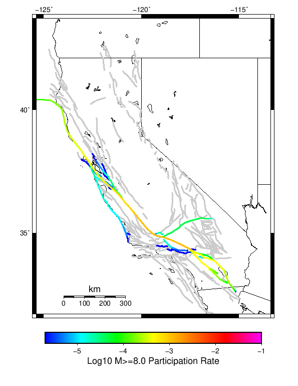
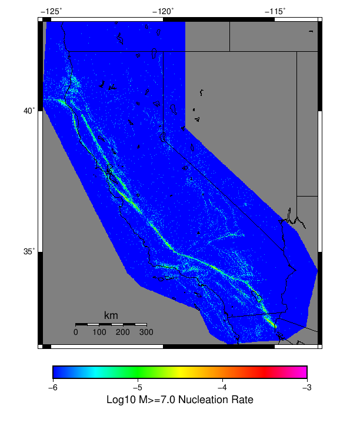

Start 1919, 500 yr, Scale Factor 1.0, Spontaneous, Historical Catalog Results
| Start 1919, 500 yr, Scale Factor 1.0, Spontaneous, Historical Catalog |
|---|
| Num Simulations | 55 (incomplete) |
| Start Time | 1919/01/01 00:00:00 UTC |
| Start Time Epoch Milliseconds | -1609459200000 |
| Duration | 500 Years |
| Includes Spontaneous? | true |
| Trigger Ruptures | (none) |
| Historical Ruptures | 165 Trigger Ruptures |
| First: M7.3 at 1852/01/05 04:40:39 UTC |
| Last: M6.5 at 1918/07/15 00:24:39 UTC |
| Largest: M7.9 at 1857/01/09 16:25:39 UTC |
| Config Generated With | u3etas_config_builder.sh --start-year 1919 --num-simulations 1000 --duration-years 500 --include-spontaneous --historical-catalog --scale-factor 1.0 --hpc-site USC_HPC --nodes 36 --hours 24 --queue scec |
Table Of Contents
Magnitude Frequency Distribution
(top)
Legend
- Mean (thick black line): mean annual rate across all 55 catalogs
- 2.5%,97.5% (thin black lines): annual rate percentiles across all 55 catalogs
- Median (thin blue line): median annual rate across all 55 catalogs
- Mode (thin cyan line): modal annual rate across all 55 catalogs (scaled to annualized value)
- 500 yr Probability (thin red line): 500 year probability calculated as the fraction of catalogs with at least 1 occurrence
- 500 yr Supraseismogenic Probability (thin dashed red line): same as above, but only for supraseismogenic ruptures on explicitly modeled UCERF3 faults
- 95% Conf (light red shaded region): binomial 95% confidence bounds on probability

| Mag | Mean | 2.5 %ile | 97.5 %ile | Median | Mode | 500 yr Probability | 500 yr Supra-Seis Prob |
|---|
| M≥5 | 6.891 | 6.148 | 7.644 | 6.926 | 7.056 | 1.000 (100.00%) | 1.000 (100.00%) |
| M≥5.1 | 5.445 | 4.902 | 6.044 | 5.454 | 5.590 | 1.000 (100.00%) | 1.000 (100.00%) |
| M≥5.2 | 4.296 | 3.810 | 4.816 | 4.296 | 4.330 | 1.000 (100.00%) | 1.000 (100.00%) |
| M≥5.3 | 3.380 | 2.964 | 3.826 | 3.378 | 3.424 | 1.000 (100.00%) | 1.000 (100.00%) |
| M≥5.4 | 2.657 | 2.338 | 3.024 | 2.634 | 2.632 | 1.000 (100.00%) | 1.000 (100.00%) |
| M≥5.5 | 2.087 | 1.856 | 2.382 | 2.068 | 2.062 | 1.000 (100.00%) | 1.000 (100.00%) |
| M≥5.6 | 1.636 | 1.444 | 1.850 | 1.632 | 1.632 | 1.000 (100.00%) | 1.000 (100.00%) |
| M≥5.7 | 1.276 | 1.110 | 1.430 | 1.272 | 1.246 | 1.000 (100.00%) | 1.000 (100.00%) |
| M≥5.8 | 0.988 | 0.866 | 1.126 | 0.986 | 0.998 | 1.000 (100.00%) | 1.000 (100.00%) |
| M≥5.9 | 0.754 | 0.632 | 0.850 | 0.754 | 0.762 | 1.000 (100.00%) | 1.000 (100.00%) |
| M≥6 | 0.595 | 0.488 | 0.674 | 0.594 | 0.614 | 1.000 (100.00%) | 1.000 (100.00%) |
| M≥6.1 | 0.459 | 0.384 | 0.530 | 0.460 | 0.478 | 1.000 (100.00%) | 1.000 (100.00%) |
| M≥6.2 | 0.359 | 0.302 | 0.424 | 0.356 | 0.356 | 1.000 (100.00%) | 1.000 (100.00%) |
| M≥6.3 | 0.283 | 0.232 | 0.334 | 0.286 | 0.268 | 1.000 (100.00%) | 1.000 (100.00%) |
| M≥6.4 | 0.220 | 0.178 | 0.256 | 0.222 | 0.240 | 1.000 (100.00%) | 1.000 (100.00%) |
| M≥6.5 | 0.171 | 0.134 | 0.210 | 0.174 | 0.180 | 1.000 (100.00%) | 1.000 (100.00%) |
| M≥6.6 | 0.132 | 0.104 | 0.166 | 0.132 | 0.132 | 1.000 (100.00%) | 1.000 (100.00%) |
| M≥6.7 | 0.101 | 0.074 | 0.132 | 0.100 | 0.108 | 1.000 (100.00%) | 1.000 (100.00%) |
| M≥6.8 | 0.081 | 0.056 | 0.102 | 0.084 | 0.086 | 1.000 (100.00%) | 1.000 (100.00%) |
| M≥6.9 | 0.064 | 0.044 | 0.078 | 0.064 | 0.058 | 1.000 (100.00%) | 1.000 (100.00%) |
| M≥7 | 0.049 | 0.032 | 0.066 | 0.048 | 0.048 | 1.000 (100.00%) | 1.000 (100.00%) |
| M≥7.1 | 0.038 | 0.022 | 0.054 | 0.038 | 0.040 | 1.000 (100.00%) | 1.000 (100.00%) |
| M≥7.2 | 0.029 | 0.016 | 0.042 | 0.028 | 0.038 | 1.000 (100.00%) | 1.000 (100.00%) |
| M≥7.3 | 0.022 | 0.012 | 0.036 | 0.020 | 0.016 | 1.000 (100.00%) | 1.000 (100.00%) |
| M≥7.4 | 0.017 | 8.00E-3 | 0.026 | 0.016 | 0.016 | 1.000 (100.00%) | 1.000 (100.00%) |
| M≥7.5 | 0.012 | 6.00E-3 | 0.018 | 0.012 | 0.014 | 1.000 (100.00%) | 1.000 (100.00%) |
| M≥7.6 | 8.91E-3 | 4.00E-3 | 0.014 | 8.00E-3 | 8.00E-3 | 1.000 (100.00%) | 1.000 (100.00%) |
| M≥7.7 | 6.69E-3 | 2.00E-3 | 0.012 | 6.00E-3 | 8.00E-3 | 1.000 (100.00%) | 1.000 (100.00%) |
| M≥7.8 | 4.22E-3 | 2.00E-3 | 6.00E-3 | 4.00E-3 | 4.00E-3 | 0.982 (98.18%) | 0.982 (98.18%) |
| M≥7.9 | 2.40E-3 | 0.000 | 4.00E-3 | 2.00E-3 | 2.00E-3 | 0.836 (83.64%) | 0.836 (83.64%) |
| M≥8 | 1.53E-3 | 0.000 | 4.00E-3 | 2.00E-3 | 2.00E-3 | 0.618 (61.82%) | 0.618 (61.82%) |
| M≥8.1 | 7.27E-4 | 0.000 | 2.00E-3 | 0.000 | 0.000 | 0.345 (34.55%) | 0.345 (34.55%) |
| M≥8.2 | 2.91E-4 | 0.000 | 2.00E-3 | 0.000 | 0.000 | 0.145 (14.55%) | 0.145 (14.55%) |
| M≥8.3 | 7.27E-5 | 0.000 | 2.00E-3 | 0.000 | 0.000 | 0.036 (3.64%) | 0.036 (3.64%) |
| M≥8.4 | 0.000 | 0.000 | 0.000 | 0.000 | 0.000 | 0.000 (0.00%) | 0.000 (0.00%) |
| M≥8.5 | 0.000 | 0.000 | 0.000 | 0.000 | 0.000 | 0.000 (0.00%) | 0.000 (0.00%) |
| M≥8.6 | 0.000 | 0.000 | 0.000 | 0.000 | 0.000 | 0.000 (0.00%) | 0.000 (0.00%) |
| M≥8.7 | 0.000 | 0.000 | 0.000 | 0.000 | 0.000 | 0.000 (0.00%) | 0.000 (0.00%) |
| M≥8.8 | 0.000 | 0.000 | 0.000 | 0.000 | 0.000 | 0.000 (0.00%) | 0.000 (0.00%) |
| M≥8.9 | 0.000 | 0.000 | 0.000 | 0.000 | 0.000 | 0.000 (0.00%) | 0.000 (0.00%) |
| M≥9 | 0.000 | 0.000 | 0.000 | 0.000 | 0.000 | 0.000 (0.00%) | 0.000 (0.00%) |
Long Term Rate Variability
(top)
162 Year Variability
(top)

Download CSV Here
| Magnitude | Mean | Median | Mode | Std. Dev. | 2.5 %-ile | 16 %-ile | 84 %-ile | 97.5 %-ile |
|---|
| 5.0 | 6.8982415 | 6.9074073 | 6.648148 | 0.65248424 | 5.660494 | 6.2777777 | 7.5493827 | 8.154321 |
| 5.1 | 5.451141 | 5.462963 | 5.0308642 | 0.529616 | 4.3271604 | 4.9444447 | 5.9814816 | 6.462963 |
| 5.2 | 4.2997007 | 4.2901235 | 4.067901 | 0.42861405 | 3.425926 | 3.8950617 | 4.759259 | 5.0925927 |
| 5.3 | 3.3831277 | 3.3580246 | 3.5246913 | 0.35294902 | 2.6728394 | 3.0679011 | 3.7469137 | 4.0864196 |
| 5.4 | 2.6585858 | 2.654321 | 2.6975307 | 0.2917427 | 2.0617285 | 2.3765433 | 2.9814816 | 3.1975307 |
| 5.5 | 2.08844 | 2.0925925 | 2.2469137 | 0.22634435 | 1.6296296 | 1.8827161 | 2.3148148 | 2.5246913 |
| 5.6 | 1.6375234 | 1.6419753 | 1.6666666 | 0.18421605 | 1.2962962 | 1.4567901 | 1.8271605 | 1.9938271 |
| 5.7 | 1.2789749 | 1.2839506 | 1.2160494 | 0.15004912 | 1.0123457 | 1.1234568 | 1.4382716 | 1.5432099 |
| 5.8 | 0.9904227 | 0.99382716 | 0.95679015 | 0.116310015 | 0.7839506 | 0.8765432 | 1.1049383 | 1.2160494 |
| 5.9 | 0.75555557 | 0.75308645 | 0.74691355 | 0.09433964 | 0.5802469 | 0.66049385 | 0.845679 | 0.9444444 |
| 6.0 | 0.59584737 | 0.5925926 | 0.61728394 | 0.075560234 | 0.45061728 | 0.5185185 | 0.67901236 | 0.7345679 |
| 6.1 | 0.4593715 | 0.46296296 | 0.4691358 | 0.06261807 | 0.33950618 | 0.39506173 | 0.52469134 | 0.5802469 |
| 6.2 | 0.3600823 | 0.36419752 | 0.37654322 | 0.05469716 | 0.25308642 | 0.30246913 | 0.41358024 | 0.4691358 |
| 6.3 | 0.2829031 | 0.28395063 | 0.3148148 | 0.044823114 | 0.2037037 | 0.2345679 | 0.3271605 | 0.36419752 |
| 6.4 | 0.21994014 | 0.22222222 | 0.17901234 | 0.03963244 | 0.14814815 | 0.17901234 | 0.25925925 | 0.29012346 |
| 6.5 | 0.17089413 | 0.17283951 | 0.18518518 | 0.033767443 | 0.11111111 | 0.13580246 | 0.2037037 | 0.24074075 |
| 6.6 | 0.13209876 | 0.12962963 | 0.12345679 | 0.029262885 | 0.074074075 | 0.10493827 | 0.16666667 | 0.19135803 |
| 6.7 | 0.101459034 | 0.09876543 | 0.09259259 | 0.024890896 | 0.055555556 | 0.08024691 | 0.12962963 | 0.15432099 |
| 6.8 | 0.08140666 | 0.08024691 | 0.08024691 | 0.023668868 | 0.043209877 | 0.055555556 | 0.10493827 | 0.12962963 |
| 6.9 | 0.06359895 | 0.061728396 | 0.061728396 | 0.020737123 | 0.024691358 | 0.043209877 | 0.086419754 | 0.10493827 |
| 7.0 | 0.048971195 | 0.049382716 | 0.037037037 | 0.017206527 | 0.018518519 | 0.030864198 | 0.06790123 | 0.086419754 |
| 7.1 | 0.038271606 | 0.037037037 | 0.030864198 | 0.015427581 | 0.012345679 | 0.024691358 | 0.055555556 | 0.06790123 |
| 7.2 | 0.028469885 | 0.024691358 | 0.018518519 | 0.012450397 | 0.0061728396 | 0.018518519 | 0.043209877 | 0.049382716 |
| 7.3 | 0.02210999 | 0.018518519 | 0.018518519 | 0.010779813 | 0.0061728396 | 0.012345679 | 0.030864198 | 0.049382716 |
| 7.4 | 0.01661055 | 0.018518519 | 0.012345679 | 0.008719546 | 0.0 | 0.0061728396 | 0.024691358 | 0.037037037 |
| 7.5 | 0.0117471 | 0.012345679 | 0.012345679 | 0.007091536 | 0.0 | 0.0061728396 | 0.018518519 | 0.024691358 |
| 7.6 | 0.008941265 | 0.0061728396 | 0.0061728396 | 0.0059194476 | 0.0 | 0.0 | 0.012345679 | 0.018518519 |
| 7.7 | 0.0066591846 | 0.0061728396 | 0.0061728396 | 0.0050087133 | 0.0 | 0.0 | 0.012345679 | 0.018518519 |
| 7.8 | 0.0041900487 | 0.0061728396 | 0.0061728396 | 0.0039152117 | 0.0 | 0.0 | 0.0061728396 | 0.012345679 |
| 7.9 | 0.0024317247 | 0.0 | 0.0 | 0.0033183673 | 0.0 | 0.0 | 0.0061728396 | 0.0061728396 |
| 8.0 | 0.0015338571 | 0.0 | 0.0 | 0.0026756164 | 0.0 | 0.0 | 0.0061728396 | 0.0061728396 |
| 8.1 | 7.48223E-4 | 0.0 | 0.0 | 0.002020785 | 0.0 | 0.0 | 0.0 | 0.0061728396 |
| 8.2 | 2.9928918E-4 | 0.0 | 0.0 | 0.0013298906 | 0.0 | 0.0 | 0.0 | 0.0061728396 |
| 8.3 | 7.4822296E-5 | 0.0 | 0.0 | 6.775321E-4 | 0.0 | 0.0 | 0.0 | 0.0 |
| 8.4 | 0.0 | 0.0 | 0.0 | 0.0 | 0.0 | 0.0 | 0.0 | 0.0 |
| 8.5 | 0.0 | 0.0 | 0.0 | 0.0 | 0.0 | 0.0 | 0.0 | 0.0 |
| 8.6 | 0.0 | 0.0 | 0.0 | 0.0 | 0.0 | 0.0 | 0.0 | 0.0 |
| 8.7 | 0.0 | 0.0 | 0.0 | 0.0 | 0.0 | 0.0 | 0.0 | 0.0 |
| 8.8 | 0.0 | 0.0 | 0.0 | 0.0 | 0.0 | 0.0 | 0.0 | 0.0 |
| 8.9 | 0.0 | 0.0 | 0.0 | 0.0 | 0.0 | 0.0 | 0.0 | 0.0 |
| 9.0 | 0.0 | 0.0 | 0.0 | 0.0 | 0.0 | 0.0 | 0.0 | 0.0 |
80 Year Variability
(top)

Download CSV Here
| Magnitude | Mean | Median | Mode | Std. Dev. | 2.5 %-ile | 16 %-ile | 84 %-ile | 97.5 %-ile |
|---|
| 5.0 | 6.899015 | 6.775 | 6.125 | 1.0109972 | 5.2125 | 5.8375 | 7.9375 | 8.9625 |
| 5.1 | 5.453447 | 5.425 | 5.75 | 0.81309336 | 4.1 | 4.6375 | 6.2875 | 7.0875 |
| 5.2 | 4.3007956 | 4.25 | 4.725 | 0.64747936 | 3.2 | 3.625 | 4.9625 | 5.5875 |
| 5.3 | 3.3845077 | 3.3625 | 3.925 | 0.5210401 | 2.475 | 2.85 | 3.925 | 4.4 |
| 5.4 | 2.6591666 | 2.65 | 2.925 | 0.42452064 | 1.9125 | 2.1875 | 3.1125 | 3.4875 |
| 5.5 | 2.0885606 | 2.0875 | 1.925 | 0.3385107 | 1.4875 | 1.725 | 2.4625 | 2.725 |
| 5.6 | 1.6378788 | 1.625 | 1.8375 | 0.2788533 | 1.15 | 1.325 | 1.9375 | 2.1875 |
| 5.7 | 1.2789773 | 1.275 | 1.3 | 0.22645551 | 0.9125 | 1.0375 | 1.525 | 1.725 |
| 5.8 | 0.99060607 | 0.975 | 1.025 | 0.17737429 | 0.7 | 0.8125 | 1.175 | 1.3375 |
| 5.9 | 0.7562121 | 0.75 | 0.8 | 0.14584953 | 0.5 | 0.5875 | 0.9 | 1.05 |
| 6.0 | 0.5966667 | 0.6 | 0.6 | 0.11904615 | 0.3875 | 0.4625 | 0.725 | 0.825 |
| 6.1 | 0.4598485 | 0.4625 | 0.475 | 0.09960301 | 0.2875 | 0.35 | 0.55 | 0.675 |
| 6.2 | 0.3603788 | 0.3625 | 0.3875 | 0.082767986 | 0.2125 | 0.275 | 0.45 | 0.5375 |
| 6.3 | 0.28310606 | 0.2875 | 0.275 | 0.07025661 | 0.1625 | 0.2125 | 0.35 | 0.425 |
| 6.4 | 0.22022727 | 0.225 | 0.2375 | 0.06116698 | 0.1125 | 0.1625 | 0.275 | 0.35 |
| 6.5 | 0.17117424 | 0.1625 | 0.1625 | 0.051645085 | 0.075 | 0.125 | 0.225 | 0.275 |
| 6.6 | 0.13238636 | 0.125 | 0.15 | 0.044340473 | 0.0625 | 0.0875 | 0.175 | 0.225 |
| 6.7 | 0.10162879 | 0.1 | 0.075 | 0.036514383 | 0.0375 | 0.0625 | 0.1375 | 0.175 |
| 6.8 | 0.08147727 | 0.075 | 0.0625 | 0.034238838 | 0.025 | 0.05 | 0.1125 | 0.15 |
| 6.9 | 0.06371212 | 0.0625 | 0.0625 | 0.029487912 | 0.0125 | 0.0375 | 0.1 | 0.125 |
| 7.0 | 0.04912879 | 0.05 | 0.0375 | 0.024514636 | 0.0125 | 0.025 | 0.075 | 0.1 |
| 7.1 | 0.038333334 | 0.0375 | 0.0375 | 0.021798562 | 0.0 | 0.0125 | 0.0625 | 0.0875 |
| 7.2 | 0.02844697 | 0.025 | 0.025 | 0.018205833 | 0.0 | 0.0125 | 0.05 | 0.075 |
| 7.3 | 0.022083333 | 0.025 | 0.0125 | 0.016147727 | 0.0 | 0.0125 | 0.0375 | 0.0625 |
| 7.4 | 0.01651515 | 0.0125 | 0.0125 | 0.013074771 | 0.0 | 0.0 | 0.025 | 0.05 |
| 7.5 | 0.011628788 | 0.0125 | 0.0125 | 0.010573347 | 0.0 | 0.0 | 0.025 | 0.0375 |
| 7.6 | 0.008863636 | 0.0125 | 0.0125 | 0.008987304 | 0.0 | 0.0 | 0.0125 | 0.025 |
| 7.7 | 0.006628788 | 0.0 | 0.0 | 0.007923605 | 0.0 | 0.0 | 0.0125 | 0.025 |
| 7.8 | 0.0042045456 | 0.0 | 0.0 | 0.0065255966 | 0.0 | 0.0 | 0.0125 | 0.0125 |
| 7.9 | 0.0024621212 | 0.0 | 0.0 | 0.005346867 | 0.0 | 0.0 | 0.0125 | 0.0125 |
| 8.0 | 0.0015530303 | 0.0 | 0.0 | 0.0041294857 | 0.0 | 0.0 | 0.0 | 0.0125 |
| 8.1 | 7.5757573E-4 | 0.0 | 0.0 | 0.0029871082 | 0.0 | 0.0 | 0.0 | 0.0125 |
| 8.2 | 3.030303E-4 | 0.0 | 0.0 | 0.0019254313 | 0.0 | 0.0 | 0.0 | 0.0 |
| 8.3 | 7.5757576E-5 | 0.0 | 0.0 | 9.7164366E-4 | 0.0 | 0.0 | 0.0 | 0.0 |
| 8.4 | 0.0 | 0.0 | 0.0 | 0.0 | 0.0 | 0.0 | 0.0 | 0.0 |
| 8.5 | 0.0 | 0.0 | 0.0 | 0.0 | 0.0 | 0.0 | 0.0 | 0.0 |
| 8.6 | 0.0 | 0.0 | 0.0 | 0.0 | 0.0 | 0.0 | 0.0 | 0.0 |
| 8.7 | 0.0 | 0.0 | 0.0 | 0.0 | 0.0 | 0.0 | 0.0 | 0.0 |
| 8.8 | 0.0 | 0.0 | 0.0 | 0.0 | 0.0 | 0.0 | 0.0 | 0.0 |
| 8.9 | 0.0 | 0.0 | 0.0 | 0.0 | 0.0 | 0.0 | 0.0 | 0.0 |
| 9.0 | 0.0 | 0.0 | 0.0 | 0.0 | 0.0 | 0.0 | 0.0 | 0.0 |
28 Year Variability
(top)

Download CSV Here
| Magnitude | Mean | Median | Mode | Std. Dev. | 2.5 %-ile | 16 %-ile | 84 %-ile | 97.5 %-ile |
|---|
| 5.0 | 6.899503 | 6.5 | 5.678571 | 1.7766333 | 4.571429 | 5.285714 | 8.5 | 11.392858 |
| 5.1 | 5.4523683 | 5.178571 | 5.214286 | 1.4281 | 3.4642856 | 4.142857 | 6.75 | 9.142858 |
| 5.2 | 4.2996564 | 4.107143 | 3.857143 | 1.1515617 | 2.7142856 | 3.2142856 | 5.357143 | 7.214286 |
| 5.3 | 3.3842247 | 3.25 | 3.357143 | 0.92830324 | 2.0714285 | 2.5 | 4.285714 | 5.678571 |
| 5.4 | 2.6584415 | 2.5357144 | 2.5357144 | 0.7499945 | 1.5357143 | 1.9642857 | 3.357143 | 4.464286 |
| 5.5 | 2.0886555 | 2.0 | 1.7142857 | 0.60856885 | 1.1785715 | 1.5 | 2.642857 | 3.5357144 |
| 5.6 | 1.6382353 | 1.5714285 | 1.3571428 | 0.49203682 | 0.89285713 | 1.1785715 | 2.107143 | 2.8214285 |
| 5.7 | 1.2788388 | 1.2142857 | 1.0714285 | 0.3948878 | 0.6785714 | 0.89285713 | 1.6428572 | 2.1785715 |
| 5.8 | 0.9902979 | 0.9285714 | 0.85714287 | 0.3135419 | 0.5 | 0.71428573 | 1.2857143 | 1.7142857 |
| 5.9 | 0.75580597 | 0.71428573 | 0.5714286 | 0.25466865 | 0.35714287 | 0.5 | 1.0 | 1.3214285 |
| 6.0 | 0.5961039 | 0.5714286 | 0.53571427 | 0.20708323 | 0.25 | 0.39285713 | 0.8214286 | 1.0357143 |
| 6.1 | 0.45966387 | 0.42857143 | 0.42857143 | 0.174797 | 0.17857143 | 0.2857143 | 0.64285713 | 0.8214286 |
| 6.2 | 0.3603132 | 0.35714287 | 0.32142857 | 0.14240538 | 0.14285715 | 0.21428572 | 0.5 | 0.6785714 |
| 6.3 | 0.28311688 | 0.25 | 0.25 | 0.1235249 | 0.071428575 | 0.17857143 | 0.39285713 | 0.53571427 |
| 6.4 | 0.22043544 | 0.21428572 | 0.21428572 | 0.10746915 | 0.035714287 | 0.10714286 | 0.32142857 | 0.4642857 |
| 6.5 | 0.17131399 | 0.17857143 | 0.14285715 | 0.09190774 | 0.035714287 | 0.071428575 | 0.25 | 0.35714287 |
| 6.6 | 0.13242933 | 0.10714286 | 0.10714286 | 0.0791147 | 0.0 | 0.071428575 | 0.21428572 | 0.2857143 |
| 6.7 | 0.101527885 | 0.10714286 | 0.071428575 | 0.06743469 | 0.0 | 0.035714287 | 0.17857143 | 0.25 |
| 6.8 | 0.08139801 | 0.071428575 | 0.071428575 | 0.059405524 | 0.0 | 0.035714287 | 0.14285715 | 0.21428572 |
| 6.9 | 0.06359816 | 0.071428575 | 0.035714287 | 0.05231463 | 0.0 | 0.0 | 0.10714286 | 0.17857143 |
| 7.0 | 0.04908327 | 0.035714287 | 0.035714287 | 0.044880964 | 0.0 | 0.0 | 0.10714286 | 0.14285715 |
| 7.1 | 0.03831169 | 0.035714287 | 0.0 | 0.039819412 | 0.0 | 0.0 | 0.071428575 | 0.14285715 |
| 7.2 | 0.028495034 | 0.035714287 | 0.0 | 0.033561528 | 0.0 | 0.0 | 0.071428575 | 0.10714286 |
| 7.3 | 0.022192514 | 0.0 | 0.0 | 0.029003412 | 0.0 | 0.0 | 0.035714287 | 0.10714286 |
| 7.4 | 0.01657754 | 0.0 | 0.0 | 0.024078688 | 0.0 | 0.0 | 0.035714287 | 0.071428575 |
| 7.5 | 0.011650114 | 0.0 | 0.0 | 0.019814974 | 0.0 | 0.0 | 0.035714287 | 0.071428575 |
| 7.6 | 0.008861726 | 0.0 | 0.0 | 0.017271454 | 0.0 | 0.0 | 0.035714287 | 0.035714287 |
| 7.7 | 0.006646295 | 0.0 | 0.0 | 0.014948091 | 0.0 | 0.0 | 0.035714287 | 0.035714287 |
| 7.8 | 0.004201681 | 0.0 | 0.0 | 0.011747776 | 0.0 | 0.0 | 0.0 | 0.035714287 |
| 7.9 | 0.0024446142 | 0.0 | 0.0 | 0.009023225 | 0.0 | 0.0 | 0.0 | 0.035714287 |
| 8.0 | 0.0015278839 | 0.0 | 0.0 | 0.0072310977 | 0.0 | 0.0 | 0.0 | 0.035714287 |
| 8.1 | 7.257448E-4 | 0.0 | 0.0 | 0.005041819 | 0.0 | 0.0 | 0.0 | 0.0 |
| 8.2 | 3.0557677E-4 | 0.0 | 0.0 | 0.0032911494 | 0.0 | 0.0 | 0.0 | 0.0 |
| 8.3 | 7.639419E-5 | 0.0 | 0.0 | 0.0016508915 | 0.0 | 0.0 | 0.0 | 0.0 |
| 8.4 | 0.0 | 0.0 | 0.0 | 0.0 | 0.0 | 0.0 | 0.0 | 0.0 |
| 8.5 | 0.0 | 0.0 | 0.0 | 0.0 | 0.0 | 0.0 | 0.0 | 0.0 |
| 8.6 | 0.0 | 0.0 | 0.0 | 0.0 | 0.0 | 0.0 | 0.0 | 0.0 |
| 8.7 | 0.0 | 0.0 | 0.0 | 0.0 | 0.0 | 0.0 | 0.0 | 0.0 |
| 8.8 | 0.0 | 0.0 | 0.0 | 0.0 | 0.0 | 0.0 | 0.0 | 0.0 |
| 8.9 | 0.0 | 0.0 | 0.0 | 0.0 | 0.0 | 0.0 | 0.0 | 0.0 |
| 9.0 | 0.0 | 0.0 | 0.0 | 0.0 | 0.0 | 0.0 | 0.0 | 0.0 |
Variability Duration Dependence
(top)

Download CSV Here
| Duration (years) | Mean | Median | Mode | Std. Dev. | 2.5 %-ile | 16 %-ile | 84 %-ile | 97.5 %-ile |
|---|
| 1.0 | 6.891164 | 5.0 | 4.0 | 7.4068375 | 1.0 | 3.0 | 10.0 | 22.0 |
| 4.0 | 6.891164 | 6.0 | 5.0 | 4.15352 | 2.75 | 4.0 | 9.0 | 18.0 |
| 8.0 | 6.8943915 | 6.125 | 5.625 | 3.0633416 | 3.5 | 4.625 | 9.0 | 15.125 |
| 12.0 | 6.8944197 | 6.25 | 5.4166665 | 2.564496 | 3.8333333 | 4.8333335 | 8.916667 | 13.75 |
| 16.0 | 6.8943915 | 6.375 | 5.4375 | 2.22244 | 4.125 | 5.0 | 8.75 | 12.875 |
| 20.0 | 6.891164 | 6.4 | 5.8 | 2.0324712 | 4.2 | 5.1 | 8.7 | 12.1 |
| 24.0 | 6.899015 | 6.5 | 5.875 | 1.8861653 | 4.3333335 | 5.2083335 | 8.666667 | 11.666667 |
| 28.0 | 6.899503 | 6.5 | 5.678571 | 1.7766333 | 4.571429 | 5.285714 | 8.5 | 11.392858 |
| 32.0 | 6.899015 | 6.5625 | 6.25 | 1.6230788 | 4.5625 | 5.40625 | 8.53125 | 11.03125 |
| 36.0 | 6.898524 | 6.611111 | 7.0277777 | 1.5647335 | 4.611111 | 5.4722223 | 8.472222 | 10.777778 |
| 40.0 | 6.899015 | 6.675 | 6.65 | 1.4321765 | 4.775 | 5.525 | 8.225 | 10.475 |
| 44.0 | 6.900526 | 6.659091 | 5.7272725 | 1.3996133 | 4.7954545 | 5.568182 | 8.318182 | 10.318182 |
| 48.0 | 6.899015 | 6.7291665 | 5.9166665 | 1.2909116 | 5.0 | 5.5833335 | 8.125 | 10.041667 |
| 52.0 | 6.898524 | 6.7115383 | 6.0 | 1.2858236 | 4.8653846 | 5.6923075 | 8.173077 | 9.923077 |
| 56.0 | 6.9141235 | 6.785714 | 6.982143 | 1.2121897 | 4.964286 | 5.767857 | 8.107142 | 9.732142 |
| 60.0 | 6.899015 | 6.7833333 | 6.9 | 1.1894293 | 5.0666666 | 5.7166667 | 8.066667 | 9.583333 |
| 64.0 | 6.9141235 | 6.796875 | 6.5 | 1.1529589 | 5.0625 | 5.796875 | 8.125 | 9.46875 |
| 68.0 | 6.899503 | 6.7647057 | 6.25 | 1.1152326 | 5.0735292 | 5.8088236 | 8.014706 | 9.426471 |
| 72.0 | 6.9176345 | 6.7916665 | 7.4444447 | 1.0899495 | 5.1944447 | 5.7916665 | 8.097222 | 9.305555 |
| 76.0 | 6.9038677 | 6.7763157 | 6.5921054 | 0.99873996 | 5.2763157 | 5.868421 | 7.986842 | 9.0 |
| 80.0 | 6.899015 | 6.775 | 6.125 | 1.0109972 | 5.2125 | 5.8375 | 7.9375 | 8.9625 |
| 84.0 | 6.907316 | 6.797619 | 6.142857 | 1.0209471 | 5.202381 | 5.821429 | 7.964286 | 9.071428 |
| 88.0 | 6.9258676 | 6.818182 | 5.6477275 | 0.9804525 | 5.2613635 | 5.9204545 | 8.011364 | 8.852273 |
| 92.0 | 6.9042687 | 6.8586955 | 6.9130435 | 0.9352398 | 5.3586955 | 5.880435 | 7.8586955 | 8.75 |
| 96.0 | 6.899015 | 6.8229165 | 6.8125 | 0.9186984 | 5.4166665 | 5.8958335 | 7.8125 | 8.708333 |
| 100.0 | 6.891164 | 6.77 | 6.77 | 0.922929 | 5.41 | 5.93 | 7.85 | 8.67 |
| 200.0 | 6.877182 | 6.805 | 6.89 | 0.60748184 | 5.715 | 6.34 | 7.48 | 8.33 |
| 300.0 | 6.79097 | 6.7166667 | 6.576667 | 0.5263023 | 5.8533335 | 6.28 | 7.26 | 7.9166665 |
| 400.0 | 6.877182 | 6.8425 | 6.5325 | 0.45540276 | 6.1425 | 6.465 | 7.3575 | 7.8675 |
| 500.0 | 6.891164 | 6.926 | 7.056 | 0.38957027 | 6.148 | 6.49 | 7.326 | 7.644 |
Simulation Stationarity
(top)

Section Participation
(top)
Section Participation Plots
(top)
| Min Mag | Complete Catalog (including spontaneous) |
|---|
| All Supra. Seis. |  |
| M≥6.5 |  |
| M≥7 |  |
| M≥7.5 |  |
| M≥8 |  |
Supra-Seismogenic Parent Sections Table
(top)
First 10 of 307 with matching ruptures shown
| Parent Name | Total Mean Annual Rate | Total 500 Year Prob |
|---|
| San Andreas (Parkfield) | 0.039745454 | 1.0 |
| San Andreas (Creeping Section) 2011 CFM | 0.023672728 | 1.0 |
| San Andreas (Mojave S) | 0.018872727 | 1.0 |
| Mendocino | 0.0139272725 | 1.0 |
| Cerro Prieto | 0.011963637 | 1.0 |
| Imperial | 0.010581818 | 1.0 |
| Brawley (Seismic Zone) alt 1 | 0.008945455 | 1.0 |
| Hayward (So) 2011 CFM | 0.007563636 | 1.0 |
| San Andreas (San Bernardino N) | 0.006763636 | 0.9818182 |
| Elsinore (Glen Ivy) rev | 0.0067272726 | 0.94545454 |
M≥6.5 Parent Sections Table
(top)
First 10 of 290 with matching ruptures shown
| Parent Name | Total Mean Annual Rate | Total 500 Year Prob |
|---|
| Cerro Prieto | 0.0104363635 | 1.0 |
| San Andreas (Creeping Section) 2011 CFM | 0.008363636 | 0.9818182 |
| Mendocino | 0.006909091 | 0.96363634 |
| Imperial | 0.006872727 | 1.0 |
| Brawley (Seismic Zone) alt 1 | 0.006218182 | 1.0 |
| San Andreas (Mojave S) | 0.006109091 | 1.0 |
| Hayward (So) 2011 CFM | 0.006 | 1.0 |
| San Andreas (San Bernardino N) | 0.0059636366 | 0.9818182 |
| San Andreas (Santa Cruz Mts) 2011 CFM | 0.005890909 | 0.9818182 |
| San Andreas (Cholame) rev | 0.0051272726 | 1.0 |
M≥7 Parent Sections Table
(top)
First 10 of 229 with matching ruptures shown
| Parent Name | Total Mean Annual Rate | Total 500 Year Prob |
|---|
| San Andreas (Creeping Section) 2011 CFM | 0.004727273 | 0.92727274 |
| San Andreas (Carrizo) rev | 0.0046909093 | 1.0 |
| San Andreas (Cholame) rev | 0.0046909093 | 1.0 |
| San Andreas (Mojave S) | 0.0045818184 | 1.0 |
| San Andreas (Santa Cruz Mts) 2011 CFM | 0.0043636365 | 0.96363634 |
| San Andreas (Mojave N) | 0.0041454546 | 1.0 |
| San Andreas (Coachella) rev | 0.0039272727 | 0.96363634 |
| San Andreas (San Bernardino N) | 0.0038545455 | 0.94545454 |
| Cerro Prieto | 0.0038181818 | 0.90909094 |
| San Andreas (Big Bend) | 0.0037090909 | 1.0 |
M≥7.5 Parent Sections Table
(top)
First 10 of 137 with matching ruptures shown
| Parent Name | Total Mean Annual Rate | Total 500 Year Prob |
|---|
| San Andreas (Mojave N) | 0.004072727 | 1.0 |
| San Andreas (Mojave S) | 0.003781818 | 1.0 |
| San Andreas (Big Bend) | 0.0036 | 1.0 |
| San Andreas (Carrizo) rev | 0.0034181818 | 0.9818182 |
| San Andreas (Cholame) rev | 0.0032727274 | 0.9818182 |
| San Andreas (North Coast) 2011 CFM | 0.0029818183 | 0.94545454 |
| San Andreas (San Bernardino N) | 0.0028727273 | 0.90909094 |
| San Andreas (Creeping Section) 2011 CFM | 0.0025818183 | 0.8 |
| San Andreas (Parkfield) | 0.0024727273 | 0.8909091 |
| San Andreas (Peninsula) 2011 CFM | 0.0024363636 | 0.8181818 |
M≥8 Parent Sections Table
(top)
First 10 of 38 with matching ruptures shown
| Parent Name | Total Mean Annual Rate | Total 500 Year Prob |
|---|
| San Andreas (Mojave N) | 0.0013454546 | 0.58181816 |
| San Andreas (Mojave S) | 0.0013454546 | 0.58181816 |
| San Andreas (Big Bend) | 0.0013090909 | 0.58181816 |
| San Andreas (Carrizo) rev | 0.0013090909 | 0.58181816 |
| San Andreas (Cholame) rev | 0.0013090909 | 0.58181816 |
| San Andreas (San Bernardino N) | 0.0012363637 | 0.54545456 |
| San Andreas (Parkfield) | 0.0011272727 | 0.5090909 |
| San Andreas (Creeping Section) 2011 CFM | 0.0010545454 | 0.43636364 |
| San Andreas (Santa Cruz Mts) 2011 CFM | 7.636364E-4 | 0.3272727 |
| San Jacinto (Anza) rev | 7.636364E-4 | 0.34545454 |
Gridded Nucleation
(top)
| Min Mag | Complete Catalog (including spontaneous) |
|---|
| M≥5 |  |
| M≥6 |  |
| M≥7 |  |
(top)
{
"numSimulations": 1000,
"duration": 500.0,
"startYear": 1919,
"includeSpontaneous": true,
"randomSeed": 1567314526350,
"binaryOutput": true,
"binaryOutputFilters": [
{
"prefix": "results_complete",
"descendantsOnly": false
},
{
"prefix": "results_m5_preserve_chain",
"minMag": 5.0,
"preserveChainBelowMag": true,
"descendantsOnly": false
}
],
"forceRecalc": false,
"simulationName": "Start 1919, 500 yr, Scale Factor 1.0, Spontaneous, Historical Catalog",
"numRetries": 3,
"outputDir": "${ETAS_SIM_DIR}/2019_08_31-Start1919_500yr_ScaleFactor1p0_Spontaneous_HistoricalCatalog-includeSpont-histCatalog-full_td",
"triggerCatalog": "${ETAS_LAUNCHER}/inputs/u3_historical_catalog.txt",
"triggerCatalogSurfaceMappings": "${ETAS_LAUNCHER}/inputs/u3_historical_catalog_finite_fault_mappings.xml",
"treatTriggerCatalogAsSpontaneous": true,
"cacheDir": "${ETAS_LAUNCHER}/inputs/cache_fm3p1_ba",
"fssFile": "${ETAS_LAUNCHER}/inputs/2013_05_10-ucerf3p3-production-10runs_COMPOUND_SOL_FM3_1_SpatSeisU3_MEAN_BRANCH_AVG_SOL.zip",
"probModel": "FULL_TD",
"applySubSeisForSupraNucl": true,
"totRateScaleFactor": 1.0,
"gridSeisCorr": true,
"timeIndependentERF": false,
"griddedOnly": false,
"imposeGR": false,
"includeIndirectTriggering": true,
"gridSeisDiscr": 0.1,
"catalogCompletenessModel": "RELAXED",
"configCommand": "u3etas_config_builder.sh --start-year 1919 --num-simulations 1000 --duration-years 500 --include-spontaneous --historical-catalog --scale-factor 1.0 --hpc-site USC_HPC --nodes 36 --hours 24 --queue scec",
"configTime": 1567314526350
}